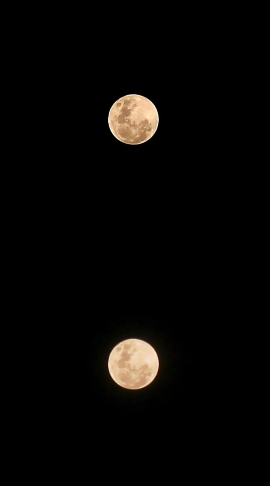
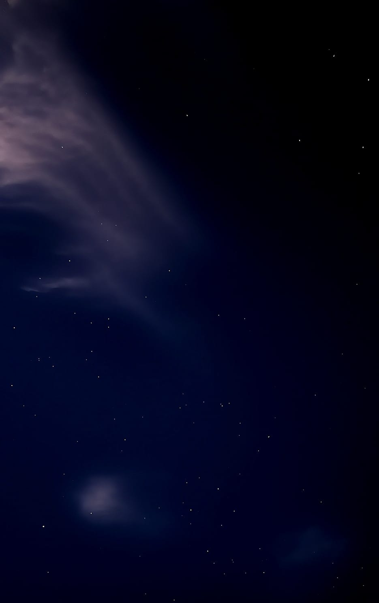
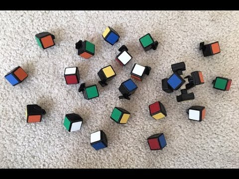

Welcome to my digital space.
Bridging digital systems, history, and visual arts.
Batam, Kepulauan Riau
Halo! Saya Fernando Effendy, seorang mahasiswa jurusan Sistem Informasi di Universitas Internasional Batam. Memiliki ketertarikan mendalam dalam memadukan teknologi modern, estetika digital, serta eksplorasi sejarah regional. Website portofolio ini dirancang layaknya ruang arsip digital interaktif yang bersih dan elegan.
"Menjembatani masa lalu melalui jejak digital, merancang masa depan melalui logika sistem dan teknologi."
— FERNANDO EFFENDY

Mengabadikan detail kawah bulan dan keindahan bintang melalui eksperimen pengaturan kamera manual. Melatih ketelitian, kesabaran, dan sudut pandang visual estetika alam semesta.

Memecahkan teka-teki logika Rubik dengan mengandalkan kecepatan tangan, pola algoritma, dan pemecahan masalah cepat (*problem solving*) yang sejalan dengan dunia Sistem Informasi.
Logika & KecepatanTertarik berkolaborasi dalam proyek web atau diskusi sejarah digital? Silakan hubungi melalui saluran di bawah: